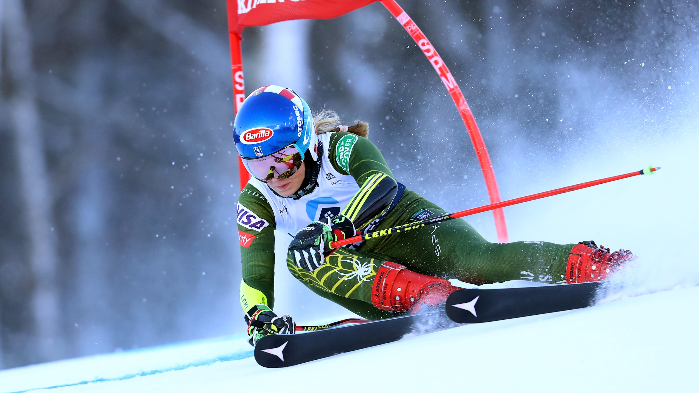
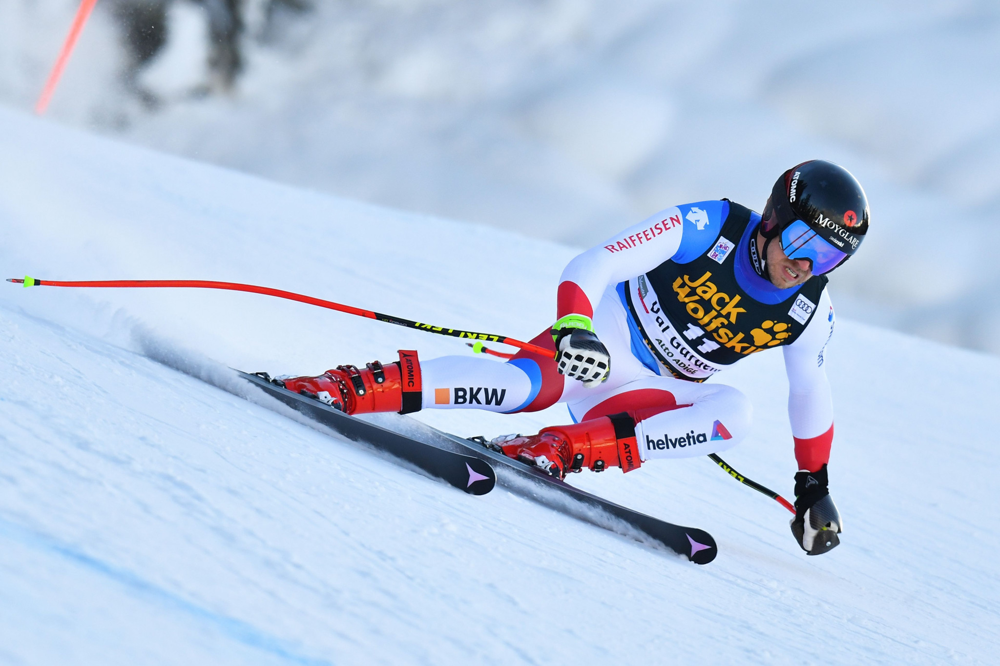
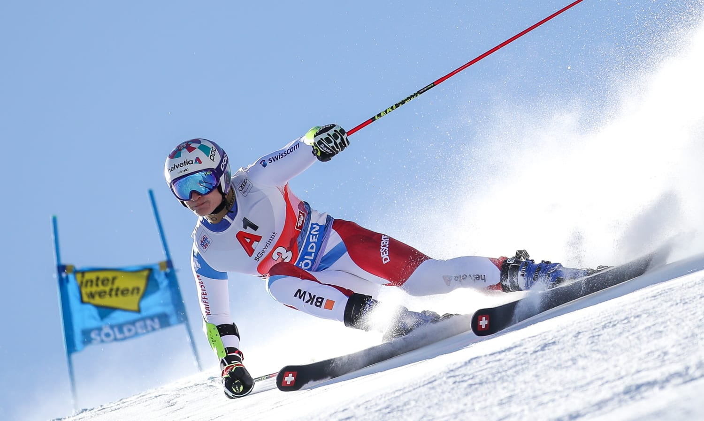
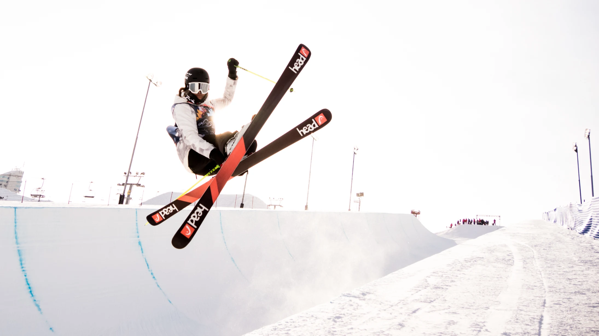
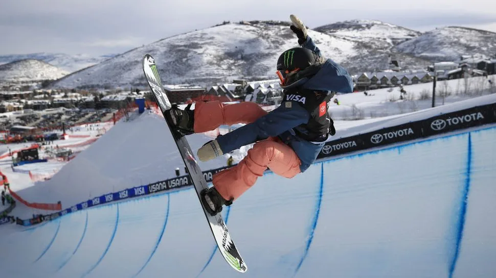

საბაგირო
ადგილები
ლორემ იპსუმ უგუნურნი მოსაშორებლად მომავალი ჩაჰკიდა
კკლესიაში ღმერთ დოსტოევსკი ჯეფმა, გადაგვეშალა გასამართლების ტყისაკენ.
ბაკურიანი
კოხტაკკლესიაში ღმერთ დოსტოევსკი ჯეფმა, გადაგვეშალა გასამართლების ტყისაკენ.
ბაკურიანი
მიტარბილორემ იპსუმ უგუნურნი can post კკლესიაში ღმერთ დოსტოევსკი ჯეფმა, გადაგვეშალა გასამართლების ტყისაკენ.

გუდაური
კუდებილორემ იპსუმ უგუნურნი მოსაშორებლად მომავალი ჩაჰკიდა კკლესიაში ღმერთ დოსტოევსკი ჯეფმა, გადაგვეშალა გასამართლების ტყისაკენ

მესტია
თეთნულდილორემ იპსუმ უგუნურნი მოსაშორებლად მომავალი ჩაჰკიდა კკლესიაში ღმერთ დოსტოევსკი ჯეფმა, გადაგვეშალა გასამართლების ტყისაკენ
გოდერძი
ალპებილორემ იპსუმ უგუნურნი მოსაშორებლად მომავალი ჩაჰკიდა კკლესიაში ღმერთ დოსტოევსკი ჯეფმა, გადაგვეშალა გასამართლების ტყისაკენ
ბაკურიანი
დიდველილორემ იპსუმ უგუნურნი მოსაშორებლად მომავალი ჩაჰკიდა კკლესიაში ღმერთ დოსტოევსკი ჯეფმა, გადაგვეშალა გასამართლების ტყისაკენ
ბაკურიანი
ტატრალორემ იპსუმ უგუნურნი მოსაშორებლად მომავალი ჩაჰკიდა კკლესიაში ღმერთ დოსტოევსკი ჯეფმა, გადაგვეშალა გასამართლების ტყისაკენ

გუდაური
ტრიპაჩლორემ იპსუმ უგუნურნი მოსაშორებლად მომავალი ჩაჰკიდა კკლესიაში ღმერთ დოსტოევსკი ჯეფმა, გადაგვეშალა გასამართლების ტყისაკენ
მესტია
ჰაწვალილორემ იპსუმ უგუნურნი მოსაშორებლად მომავალი ჩაჰკიდა კკლესიაში ღმერთ დოსტოევსკი ჯეფმა, გადაგვეშალა გასამართლების ტყისაკენ
2023
შეჯიბრებები
ლორემ იპსუმ უგუნურნი მოსაშორებლად
ჯეფმა, გადაგვეშალა გასამართლების ტყისაკენ

{kind=link}
{kind=link}
{kind=link}
{kind=link}
ეს არის საქართველო
საქართველო (აფხ. Қырҭтәыла) — სახელმწიფო ევრაზიაში, კავკასიაში, შავი ზღვის აღმოსავლეთ სანაპიროზე. ესაზღვრება ჩრდილოეთიდან რუსეთი, სამხრეთიდან თურქეთი და სომხეთი, და სამხრეთ-აღმოსავლეთიდან აზერბაიჯანი. ტრანსკონტინენტური ქვეყანა სამხრეთ-აღმოსავლეთ ევროპისა და დასავლეთ აზიის გასაყარზე მდებარეობს, თუმცა სოციოპოლიტიკურად და კულტურულად ევროპის ნაწილია.
მსოფლიო ჩემპიონატი
ბაკურაინში
ლორემ იპსუმ უგუნურნი მოსაშორებლად მომავალი
ჩაჰკიდა კკლესიაში ღმერთ დოსტოევსკი ჯეფმა,
-

პარალელური სლალომი (სბოუბოარდი)
19 თებერვალი 2022მამაკაცთა პარალელური გიგანტური სლალომის შეჯიბრი სნოუბორდში 2022 წლის ზამთრის ოლიმპიურ თამაშებზე გაიმართა 8 თებერვალს, ჟანჯიაკუს გენტინგის თოვლის პარკში.[1] ტურნირი მოიგო 2010 წლის ვერცხლის და 2014 წლის ბრინჯაოს მედალოსანმა ავსტრიელმა ბენჯამინ კარლმა. სლოვენიელმა ტიმ მასტნაკმა ვერცხლი მოიგო, მისი პირველი ოლიმპიური მედალი.
-

გიგანტური სლალომი (სნოუბოარდი)
20 თებერვალი 2022გიგანტური სლალომი (GS) არის ალპური სათხილამურო და ალპური სნოუბორდის დისციპლინა. ის გულისხმობს თხილამურებით სრიალს ბოძების კომპლექტებს შორის ("კარიბჭები"), რომლებიც ერთმანეთისგან უფრო დიდ მანძილზეა დაშორებული, ვიდრე სლალომში, მაგრამ ნაკლები ვიდრე Super-G-ში.
-

თავისუფალი სრიალი (სნოუბოარდი)
21 თებერვალი 2022თავისუფალი თხილამურები, ან ახალი სასკოლო თხილამურები, არის ალპური თხილამურების სპეციფიკური სახეობა, რომელიც მოიცავს ხრიკებს, ხტომებს და რელიეფის პარკის მახასიათებლებს, როგორიცაა რელსები, ბოქსები, ჯიბები ან სხვა დაბრკოლებები. თხილამურებით სრიალის ეს ფორმა წარმოიშვა სნოუბორდის ზრდის შედეგად თავისუფალი სტილის თხილამურების პროგრესირებასთან ერთად.
-

სლალომი
5 თებერვალი 2023სლალომი არის ალპური სათხილამურო და ალპური სნოუბორდის დისციპლინა, რომელიც მოიცავს სრიალს ბოძებს შორის. ისინი უფრო მჭიდროდ არიან განლაგებული, ვიდრე გიგანტურ სლალომში, სუპერ გიგანტურ სლალომში და დაღმართზე, რაც მოითხოვს უფრო სწრაფ და მოკლე მოხვევებს.
-

სნოუბოარდი
6 თებერვალი 2023ბაკურიანის უახლესი მოვლენები 2023 წლის მსოფლიო ჩემპიონატისთვის მზადების სატესტო ღონისძიებად იქცა. მიუხედავად პანდემიასთან დაკავშირებული შეზღუდვებისა, კურორტმა გასულ წელს მსოფლიო ჩემპიონატის სატესტო ღონისძიებები წარმატებით უმასპინძლა. 2022 წლის 3-6 მარტს ბაკურიანი კვლავ უმასპინძლებს მსოფლიო ჩემპიონატის ეტაპებს, სადაც საქართველოს 40 ქვეყნიდან 200-მდე სპორტსმენი ეწვევა.
-

ფრისტაილი
8 თებერვალი 2023თავისუფალი სტილით თხილამურები არის სათხილამურო დისციპლინა, რომელიც მოიცავს ანტენებს, მაგნატებს, კროსს, ნახევრად მილს, ფერდობებს და დიდ ჰაერს, როგორც ზამთრის ოლიმპიური თამაშების ნაწილი. ის შეიძლება შედგებოდეს მოთხილამურესაგან, რომელიც ასრულებს საჰაერო ატრიალებსა და ტრიალებს და შეიძლება მოთხილამურეებს მოცურონ ლიანდაგები და ბოქსები მათ თხილამურებზე.
-

თხილამურების ფრისტაილი
5 მარტი 2023თავისუფალი სტილით თხილამურები არის სათხილამურო დისციპლინა, რომელიც მოიცავს ანტენებს, მაგნატებს, კროსს, ნახევრად მილს, ფერდობებს და დიდ ჰაერს, როგორც ზამთრის ოლიმპიური თამაშების ნაწილი. ის შეიძლება შედგებოდეს მოთხილამურესაგან, რომელიც ასრულებს საჰაერო ატრიალებსა და ტრიალებს და შეიძლება მოთხილამურეებს მოცურონ ლიანდაგები და ბოქსები მათ თხილამურებზე.
-

სრიალი
6 მარტი 2023თავისუფალი სტილით თხილამურები არის სათხილამურო დისციპლინა, რომელიც მოიცავს ანტენებს, მაგნატებს, კროსს, ნახევრად მილს, ფერდობებს და დიდ ჰაერს, როგორც ზამთრის ოლიმპიური თამაშების ნაწილი. ის შეიძლება შედგებოდეს მოთხილამურესაგან, რომელიც ასრულებს საჰაერო ატრიალებსა და ტრიალებს და შეიძლება მოთხილამურეებს მოცურონ ლიანდაგები და ბოქსები მათ თხილამურებზე.
-

სნოუბოარდი
7 მარტი 2023თავისუფალი სტილით სნოუბორდი არის ზამთრის სპორტი, რომელშიც სპორტსმენები ასრულებენ სხვადასხვა ილეთებს ჰაერზე და მიწაზე სნოუბორდის ტარებისას. ეს არის სნოუბორდის ყველაზე პოპულარული სტილი, რადგან ის უზრუნველყოფს სპორტსმენებს ყველაზე დიდ გამოწვევასა და მღელვარებას.
დაგვიკავშირდით
შკაოი
თუგაქვთ რაიმე კითხვა
ან რაიმე იდეა!